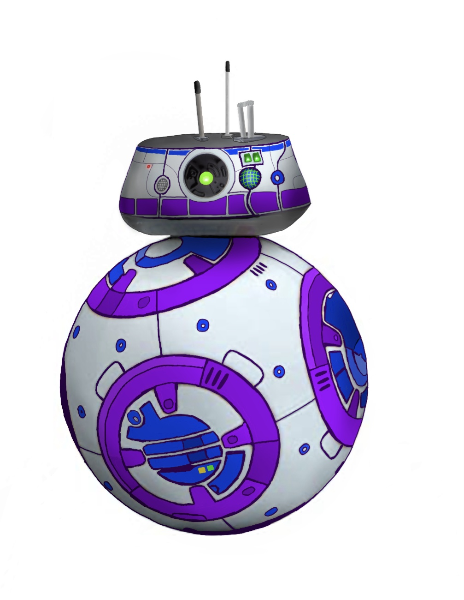

Portfolio
Mein Portfolio
Über mich
Kontakt
Charaktere, die in 'Die Schöne und das Biest' vorkommen könnten
Eine Fan-Art, die ich nach Erscheinen des Films 'Black Widow' gezeichnet habe
Ein Droid aus dem 'Star Wars' Universum, BB-T5

Eine Variation von Tassilo und Lumière aus 'Die Schöne und das Biest'